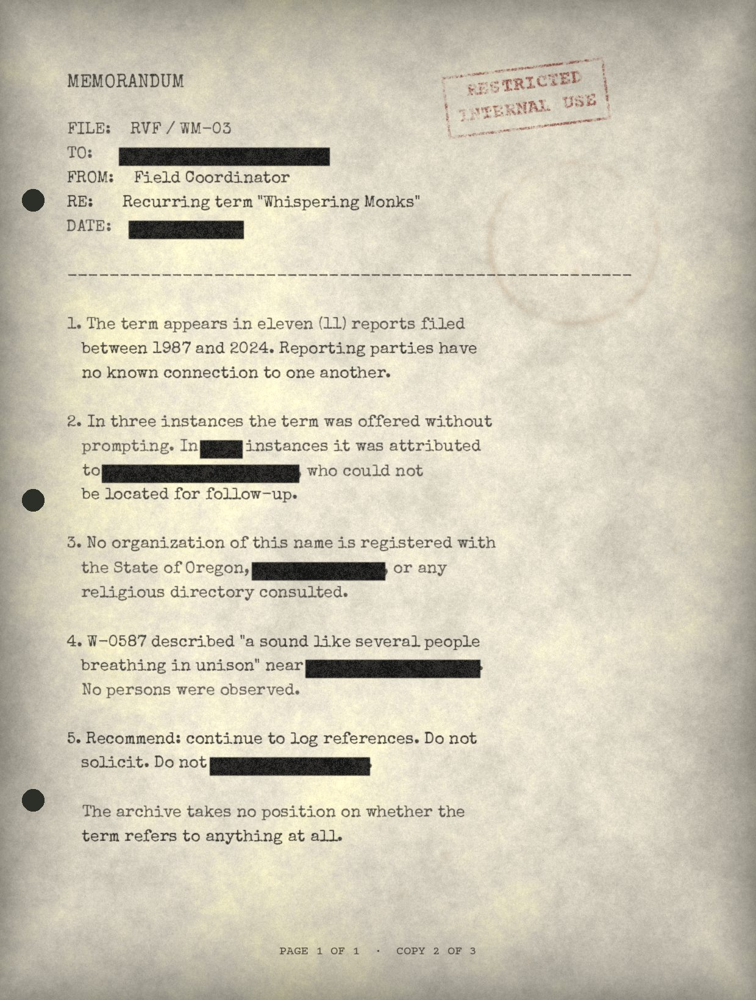
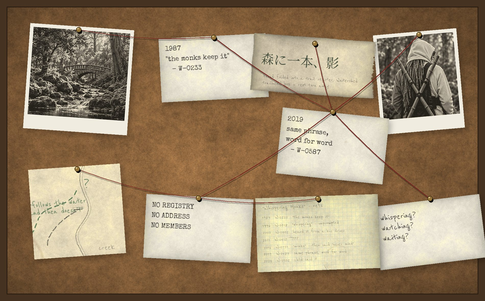

The Whispering Monks
References to an organization known as the Whispering Monks appear in numerous unrelated reports. No evidence has established that such an organization exists. The consistency of references remains notable.
What is recorded
The term appears in eleven reports from witnesses with no known connection to one another. It is never explained. It is usually said in passing, as though the listener should already know what it means, and in at least two cases the speaker stopped short after using it.
No account describes a member, a meeting, a building, or a leader. No one has claimed membership. The word “whispering” is sometimes heard as “watching” or “waiting” on tape, and transcribers have disagreed.
The archive keeps a restricted working file on the term. Portions are reproduced below with redactions made at intake.

Index of references
F-2.2 · working file, partially redacted- 1987 · W-0233 · “the monks keep it.” Context: the trail. Not explained.
- 1996 · W-0318 · Unprompted. Witness unable to say where the term was learned.
- 2001 · anonymous caller · Phone message, 41 seconds. Transcript withheld.
- 2003 · W-0402 · Heard from a bus driver on the Route 10 line.
- 2008 · W-0359 · Term written in the margin of a returned survey form.
- 2011 · W-0412 · Referenced on tape 2, side B.
- 2016 · W-0731 · Began to use the term; withdrew it.
- 2019 · W-0587 · “The monks keep it” — identical wording to entry 1.
- 2019 · W-0587 · Breathing sound near the upper reservoir.
- 2022 · parks seasonal staff · Said in conversation; declined interview.
- 2024 · W-0902 · Child, nine. “He’s with the whispering monks.”
No two sources are known to have met. Entries 1 and 8 are separated by thirty-two years.


Research fragments
F-2.3No evidence has established that such an organization exists. The consistency of references remains notable.